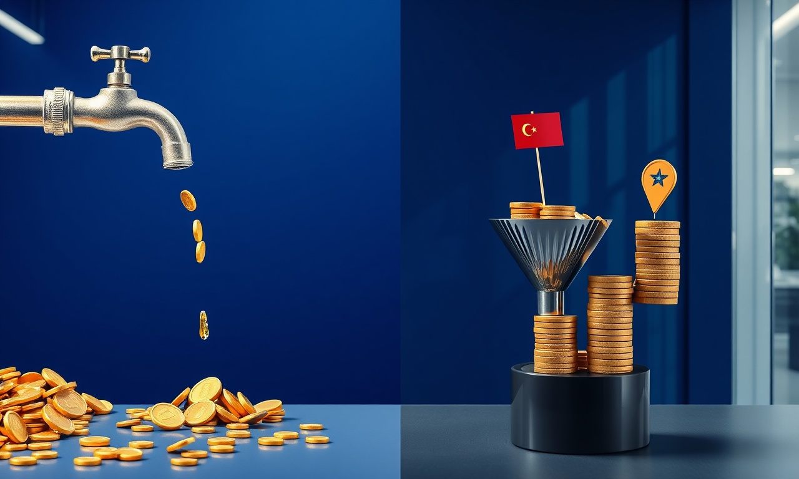
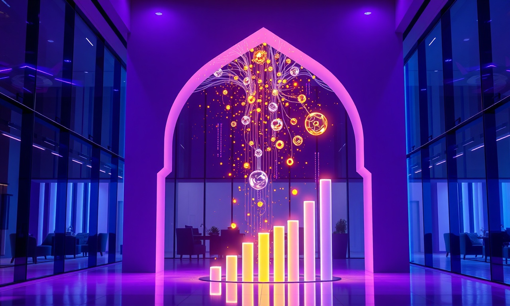

Meta Ads & Social Ads au Maroc : Pourquoi Votre Budget Fond Comme Neige au Soleil?
En résumé : Meta Ads & Social Ads au Maroc : Les 7 Erreurs Qui Brûlent Votre Budget (Et Comment les Éviter en 2026) est une démarche stratégique clé dans le domaine du Meta Ads & Social Ads. Elle permet aux entreprises au Maroc d’optimiser durablement leurs performances digitales, d’augmenter leur visibilité et de maximiser le retour sur investissement (ROI) de leurs campagnes.
Les Meta Ads (Facebook, Instagram) sont devenus le canal d'acquisition roi au Maroc. C'est un fait. Mais c'est aussi le canal où l'on perd le plus d'argent. Chaque jour, des entreprises de Casablanca, Rabat, Tanger ou Marrakech injectent des milliers de dirhams dans des campagnes mal structurées, avec des résultats décevants. La faute à des erreurs stratégiques, des pièges techniques et une méconnaissance des spécificités du marché marocain. Ce guide stratégique actuel, pensé pour 2026 et pour les années à venir, est votre feuille de route pour transformer votre publicité sociale en une machine à ROI rentable. On ne parle pas de théorie, mais de terrain, de chiffres et de solutions concrètes.
Le constat est brutal : selon nos analyses internes, près de 70% des comptes publicitaires que nous auditons présentent des fuites budgétaires critiques. Et le problème n'est pas l'algorithme ou la plateforme. C'est la méthode. Voici les 7 erreurs les plus coûteuses que nous voyons quotidiennement, et comment les corriger pour une croissance rentable.
Erreur 1 : Le Tracking et le Pixel Cassé - Piloter à l'Aveugle
La première erreur, et de loin la plus dangereuse, est de lancer des campagnes sans un tracking fiable. Vous pensez que votre pixel Facebook est correctement installé? Détrompez-vous. Dans notre expérience, plus de 80% des sites marocains ont un pixel mal configuré, des événements non déclarés, ou un CAPI (Conversions API) non implémenté. Sans données précises, l'algorithme de Meta est comme un pilote sans instruments : il vole à l'aveugle. Il optimise pour des mauvaises conversions, ou pire, pour des clics qui ne mènent à rien.
Le coût réel : Vous investissez 30 000 MAD par mois, mais vous ne savez pas quel canal, quelle annonce ou quel mot-clé génère des ventes. Vous prenez des décisions basées sur des intuitions, pas sur des faits. Votre coût d'acquisition (CPA) explose silencieusement. La solution est simple : un audit technique complet, l'installation d'un tracking fiable (Pixel + CAPI + événements personnalisés) et la mise en place de rapports de performance précis. Chez DatRey, nous commençons toujours par là. C'est la fondation de toute stratégie d'acquisition rentable.
Erreur 2 : La Stratégie de Ciblage 'Pays Maroc' - Une Usine à Gaz
Viser tout le Maroc, c'est viser personne. C'est l'erreur classique des PME et même de certaines multinationales. Le Maroc est un marché hétérogène. Le comportement d'achat d'un consommateur à Casablanca n'a rien à voir avec celui d'un client à Oujda ou à Laâyoune. Une offre de services financiers ne doit pas être diffusée de la même manière à un jeune cadre à Rabat et à un commerçant à Marrakech. En ciblant tout le pays, vous diluez votre message et gaspillez une grande partie de votre budget en impressions inutiles.

Le coût réel : Prenons l'exemple d'une PME de Tanger qui vend des solutions B2B. En ciblant 'Maroc', elle touche 80% de personnes non qualifiées. Son coût par lead utile est multiplié par 5. La solution est une stratégie de ciblage géographique et démographique fine. Utilisez le ciblage par zone (rayon de 20-30 km autour de vos zones de chalandise), par centres d'intérêt précis, et surtout, exploitez le ciblage par liste de clients (lookalike audiences). C'est là que se trouve la rentabilité.
Erreur 3 : Négliger le Coût d'Acquisition (CPA) et le Retour sur Investissement (ROAS)
Beaucoup d'annonceurs se focalisent sur le coût par clic (CPC) ou le coût pour mille impressions (CPM). Grave erreur. Le seul chiffre qui compte, c'est votre coût par acquisition (CPA) et votre retour sur les dépenses publicitaires (ROAS). Un CPC à 1,50 MAD peut sembler intéressant, mais si ces clics ne convertissent jamais, vous perdez de l'argent. À l'inverse, un CPC à 5 MAD avec un taux de conversion élevé peut être extrêmement rentable.
Le coût réel : Une entreprise de e-commerce à Casablanca dépense 15 000 MAD par mois. Elle génère 50 000 MAD de chiffre d'affaires. Son ROAS est de 3,3. C'est correct, mais pas exceptionnel. En optimisant la page de destination, en affinant le ciblage et en testant de nouvelles créatives, on peut pousser ce ROAS à 5 ou 6. Cela représente 20 000 à 30 000 MAD de revenus supplémentaires, sans augmenter le budget. La solution est de mettre en place un suivi rigoureux des KPIs, de calculer votre seuil de rentabilité (le ROAS minimum pour couvrir vos coûts) et d'optimiser en continu pour atteindre vos objectifs.

Erreur 4 : La Page de Destination (Landing Page) Faible - Le Goulot d'Étranglement
Vous avez une superbe annonce, un ciblage parfait, mais votre trafic arrive sur une page d'accueil générique ou une page produit lente et peu convaincante. C'est un désastre. L'utilisateur clique, attend 5 secondes, ne trouve pas l'information clé, et repart. Votre taux de rebond explose, votre coût par acquisition grimpe en flèche. L'expérience post-clic est aussi importante que l'annonce elle-même. C'est ce qu'on appelle le 'match' entre le message et la page d'atterrissage.
Le coût réel : Un promoteur immobilier à Rabat dépense 20 000 MAD en publicité pour générer des leads. Son annonce promet un 'Guide Gratuit sur l'Investissement Locatif'. Le lead clique et arrive sur une page d'accueil générale. 90% des visiteurs repartent sans laisser leurs coordonnées. Il paie pour des clics, mais obtient très peu de leads qualifiés. La solution est de créer des landing pages dédiées, ultra-rapides, avec un message cohérent avec l'annonce, un formulaire court et un appel à l'action clair. C'est un levier de performance immense et souvent sous-estimé.
Erreur 5 : Le Contenu Publicitaire (Créatives) Inadapté - L'Écran de Fumée
Utiliser les mêmes visuels et textes pour toutes vos campagnes, sans les adapter aux différentes audiences ou à la culture marocaine, est une erreur stratégique. Le marketing digital au Maroc exige une sensibilité locale. Ce qui fonctionne à Paris ne fonctionnera pas forcément à Casablanca. Le langage, les références culturelles, les codes visuels doivent être adaptés. De plus, la lassitude publicitaire est réelle. Une créative qui performe bien pendant un mois peut s'effondrer le mois suivant.

Le coût réel : Une marque de cosmétiques à Marrakech utilise des visuels génériques. Ses coûts publicitaires augmentent de 30% chaque mois, car l'algorithme doit travailler plus dur pour obtenir les mêmes résultats. La solution est de mettre en place une stratégie de tests systématiques. Testez différentes images, vidéos, accroches, et appels à l'action. Utilisez des formats natifs (Reels, Stories) qui performent mieux. Et surtout, créez des contenus qui résonnent avec la réalité marocaine.
Erreur 6 : Le Budget et L'Enchère Mal Gérés - Le Sablier qui Fuit
Beaucoup d'annonceurs ne comprennent pas comment fonctionnent les enchères Meta. Ils fixent un budget quotidien arbitraire et ne l'ajustent jamais. Ou pire, ils utilisent la stratégie d'enchère 'lowest cost' sans comprendre les implications. La gestion du budget est un art. Il faut savoir quand augmenter, quand diminuer, et quand couper une campagne qui ne performe pas. Il faut aussi comprendre la différence entre le budget quotidien et le budget de campagne, et l'impact des tests A/B sur votre allocation budgétaire.
Le coût réel : Une PME à Agadir veut tester 5 audiences différentes. Elle crée 5 campagnes avec 100 MAD de budget quotidien chacune. Résultat : elle disperse ses efforts, l'algorithme n'a pas assez de données pour optimiser, et elle obtient des résultats médiocres. La solution est une approche structurée : centralisez votre budget, utilisez le budget de campagne (CBO) pour laisser l'algorithme optimiser, et testez vos audiences à petite échelle avant de scaler les gagnantes.
Erreur 7 : L'Absence de Stratégie de Remarketing - Le Trésor Caché
La plupart des entreprises marocaines se concentrent sur l'acquisition de nouveaux clients et ignorent complètement le remarketing. Pourtant, les visiteurs qui ont déjà interagi avec votre site ou votre page sont vos leads les plus chauds. Ils ont montré un intérêt, mais ont besoin d'être re-contactés. Le remarketing vous permet de leur montrer des annonces personnalisées, avec des offres spéciales, pour les convertir. C'est le levier le plus rentable en termes de ROAS.
Le coût réel : Une entreprise de services à Casablanca génère 1000 visiteurs par mois, mais n'a aucun système de remarketing. Elle laisse filer 95% de son trafic sans conversion. En mettant en place une campagne de remarketing simple, elle pourrait récupérer une partie de ces visiteurs à un coût très faible. La solution est de créer des audiences personnalisées (visiteurs du site, engagés sur la page, vidéos vues) et de leur diffuser des messages spécifiques. C'est un investissement à très fort retour.
Pourquoi Faire Appel à DatRey pour Éviter Ces Pièges?
Chez DatRey (datrey.ma), nous avons fait de l'acquisition client notre métier. Nous ne sommes pas une agence de communication classique qui se contente de produire de belles images. Nous sommes des stratèges de la croissance. Nous combinons une expertise pointue en SEO/GEO, Google Ads et Meta Ads pour créer des écosystèmes digitaux complets et rentables. Notre approche est simple : nous commençons par un audit approfondi de votre présence digitale, nous identifions les fuites budgétaires, nous corrigeons les erreurs techniques, et nous déployons des stratégies d'acquisition basées sur la donnée.
Notre objectif n'est pas de vous vendre des clics, mais de générer des clients rentables pour votre entreprise. Nous avons aidé des PME et des multinationales à Casablanca, Rabat, Tanger et Marrakech à réduire leurs coûts d'acquisition de 30 à 50% tout en augmentant leur chiffre d'affaires. Nous comprenons les spécificités du marché marocain, et nous savons comment transformer un budget publicitaire en une machine à cash.
Conclusion : Passez à l'Action et Sécurisez Votre Croissance en 2026
Les Meta Ads et Social Ads sont un levier de croissance puissant, mais ils sont semés d'embûches. Les erreurs que nous avons décrites sont coûteuses, mais elles sont aussi évitables. En 2026 et pour les années à venir, la clé du succès réside dans une approche stratégique, data-driven et orientée ROI. Ne laissez plus votre budget publicitaire s'évaporer. Prenez le contrôle de vos campagnes et transformez vos investissements en résultats concrets.
Chez DatRey, nous sommes convaincus que chaque entreprise marocaine a le potentiel de dominer son marché. Il suffit d'avoir les bons outils, les bonnes stratégies et les bons partenaires. C'est pourquoi nous vous proposons une première étape simple et sans engagement : un Audit Digital Gratuit. Nous analyserons votre présence en ligne, vos campagnes actuelles (si vous en avez) et nous vous montrerons exactement où se trouvent vos opportunités de croissance et vos fuites budgétaires.
Ne laissez pas vos concurrents prendre une longueur d'avance. Contactez DatRey dès aujourd'hui pour demander votre audit et découvrez comment nous pouvons transformer votre marketing digital en un véritable moteur de croissance rentable. Votre succès commence par une décision stratégique. Prenez-la maintenant.